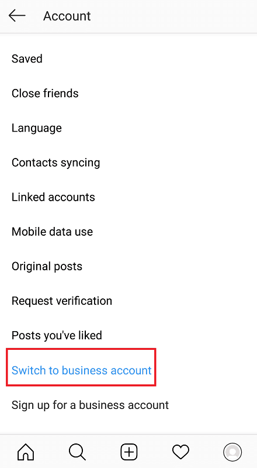

There are likely three things that come to mind when one thinks of Instagram: photos, likes, and followers.
With the platform being a central hub for all up-and-coming social media influencers and businesses, it’s all about growth on this site – and how to get more of it. Of the one billion monthly active users on Instagram, you’ve got about 25 million business profiles to compete with as a brand; so growing your follower count can take a load of time, creativity, and hard work.

Courtesy of almost.verified (Instagram account).
Knowing the right tools and tactics to boost this, however, will have you rake in the numbers in no time.
Why Are Instagram Followers Important?
Instagram, above all else, is a social media platform for making personal and business connections all over the globe. As a user, your first priority would therefore be building an audience. This is especially true for those with business profiles aiming to sell a product or service.
Courtesy of honey (Instagram account).
Having more Instagram followers not only means more customers – it provides social proof for other potential consumers. A large following on a profile is equivalent to seeing people flock to a physical store or restaurant; it shows that your brand is reliable and of quality, and thus popular among its target demographic.
How To Get Instagram Followers Organically
Before jumping into the various ways you can pay to get more followers, let’s discuss one’s options for growing their follower count naturally. (The best part is – some of these are completely free of cost!)
Get Instagram Followers Through User Engagement
Being a social media platform, one of the easiest and most effective ways of gaining visibility is by interacting with other users in your industry.
Simply commenting, liking, and following with their content can get you on their radar. Those who notice your interest in their profile are likely to engage back, and possibly leave you a follow. Brands tend to do this with influencers in their field, leaving comments on their posts in the hopes of gaining their potential interest.
Courtesy of makeupby_jaz (Instagram account).
Some users even opt to collaborate with other influential figures in their niche, giving both the opportunity to tap into each other’s audience. You can see this with common practice of big-name brands sponsoring big-name (or even micro) influencers. This way, their product or service gains social proof and endorsement through a well-trusted figure in the industry. The influencer, in turn, gains more exposure from other followers and customers of the brand.

Courtesy of milliebobbybrown (Instagram account).
Get Instagram Followers Through The Right Hashtags
Posts are categorized through “hashtags” on Instagram. Hashtags are known as terms or phrases that are used to label content and make it easier for users to find the types of media they’re after.
For example, profiles in the “beauty vlogger” scene will likely use hashtags such as “#makeup” or “#beauty” in their posts, categorizing their content under these hashtag pages. Those looking for makeup tutorials or beauty-related content will likely search for these tags, and find such posts on the real-time feed of these pages.

Using hashtags is mandatory for anyone looking to get Instagram followers, as this helps you grab the attention of those in your target demographic. It helps to do a bit of background research on the common hashtags used by brands in your niche. Your potential followers are likely surfing through these tags, looking for the type of content you provide.
Get Instagram Followers Through Ads
Unlike the previous strategies mentioned, using Instagram ads will require a bit of cash on your end – but if optimized well, it’s worth every dollar.
Using Instagram ads will firstly require a business profile. You can easily make the switch from a “personal” to a “business” account through your profile settings.

You’ll then notice a blue button under each of your posts labelled “Promote”. This option allows you to turn your standard Instagram post into a sponsored ad delivered to a specified target demographic.
Creating an Instagram ad is easy; the app takes you through a four-step process that prompts you to identify your objectives, niche, budget, and method of payment. The more you pay, the higher your reach will be.

Upon completing the process, Instagram reviews your ad to ensure you meet their guidelines. Once approved, they then deliver your post to users most likely to take interest and engage with it. Those who want to get more Instagram followers can also add a link to their profile. If your ad stands out enough, the viewer will likely tap through to view your account, and leave a follow if you gain their attention.
Get Instagram Followers Through Quality Content
Last but not least, never underestimate the impact of high-quality content.
Each of these three organic methods of getting Instagram followers may be rendered ineffective with poor, low-effort posts. Users are only likely to hit that “follow” button if your content makes an impact, or caters to their needs in some form.

Courtesy of fashionbyally (Instagram account).
Therefore, it’s crucial to maintain a standard of quality with your posts. Marketing is essential; but it works best when promoting excellence, not mediocrity. Aim to create content you’d be proud to have your potential followers see – content that provides value and exhibits creativity and originality.
Should I Buy Instagram Followers?
The notion of buying Instagram followers can be a pretty controversial one. While different people will offer different opinions, a general issue many agree on is the meaninglessness of it all.
Through buying Instagram followers, you completely cut out the process of gaining user interest, engagement, and loyalty. You’re growing your follower count not because more users have found and taken a liking to your content – but to simply raise a number.

Courtesy of tigagency (Instagram account).
As a result, your profile may flaunt an impressive number of followers, but engagement on your actual posts remains scant in comparison. Your reach and audience activity remain the same; thus, you aren’t actually growing your business.
However, not all hope is lost. Services have popped up in recent years that have allowed users to buy active Instagram followers. Compared to simply buying a fake or bot-powered follower count, these are users you pay to follow and engage with your content. You’re therefore increasing your follower count, while at the same time, having the engagement to show for it.

Courtesy of Skweezer
Buying Instagram followers through these companies is thus a much safer, effective method in building your brand. You’re establishing social proof to get your business going, and the corresponding engagement on your posts can rank them higher on Instagram’s hashtag or Explore pages. This gains you further visibility among more potential followers.
Buy Followers For Instagram With Skweezer
Skweezer is a website providing such service, well-trusted among those in the growing influencer community. Those interested can choose to buy Instagram followers, along with views, likes, and comments.
By selecting their option to buy active followers, you’ll get to choose from a variety of service “packages”. Each one comes with different pricing and results. The larger (and more expensive) of a package you pay for, the greater amount of followers and engagement you’ll receive.

Courtesy of Skweezer.
The followers bought from Skweezer are all connected to the company’s network, who are tasked with the responsibility of engaging and following customer profiles. In return, they get a paid share of service profits. These are therefore real people with real accounts on the Instagram platform, and not empty bots prone to spam. Users can rest assured that their account is 100% safe and complies with Instagram’s guidelines.

Courtesy of Skweezer.
However, Skweezer clarifies that none of these followers are actually targeted or interested in your content; they are simply there to bump up your follower count, while providing you with the corresponding engagement to help your account grow.
Get Instagram Followers With Paid Marketing Services
If you’d rather target your Instagram marketing and gain organic followers who are truly interest in your brand and mission, it may be worth paying for an Instagram growth service.
These companies provide businesses with automated tools or management services that help accelerate your growth and relevance on the platform, without having to buy a large follower count off the bat.
Often, these come in the form of bot tools or having your own virtual Instagram manager. We discuss two of the best services in these forms below.
Kenji
Breaking the stereotypically negative image of Instagram bots, Kenji enables users to gain further exposure and visibility in their niche with cutting-edge A.I. technology.

Courtesy of Kenji.
As a bot, Kenji automates your liking activity, targeting related accounts or influencers in your niche. All you have to do is specify your profile interests and target audience, and the Kenji bot gets to work liking all content according to your parameters. You can also choose to target accounts based on location, or specify profiles with a similar audience to yours. Kenji will then be directed to their followers, who may interested in your content, too.

Courtesy of Kenji.
The typical Instagram bot gets a bad rap due to the spam it typically creates, whether in the form of comments or direct messaging. Kenji, however, guarantees to never post, comment, or even follow people on your behalf. Instead, it focuses on getting Instagram followers solely through likes. The service also promises to only engage with high-quality, real accounts – avoiding any fake profiles that won’t provide any real activity or engagement.
Interested users can try out Kenji for a free, 3-day trial; no credit card required.
Upleap
If you’d rather place your Instagram marketing in the hands of a real person, then perhaps Upleap is the growth service for you.
Unlike the automated bot provided by Kenji, Upleap hooks you up with your very own virtual Instagram manager. Upon signing up, you’ll then be briefed on your account, your business objectives, and the niche you cater to. Once you’ve completed this “interview” process, your manager engage with relevant profiles based on the interests you’ve specified.

Courtesy of Upleap.
Just like Kenji, Upleap managers will never post on your behalf. This allows you to properly maintain your brand image and content quality. Your manager simply sticks to interactions that get you noticed among other active figures in your industry, helping you acquire real, natural engagement over time.

Courtesy of Upleap.
As well as standard Instagram posts, Stories of targeted accounts will also be engaged with.
New users are given a credit card-free, 3-day trial to have a feel of the service.
What If You Could Get Instagram Followers For Free?
Now that we’ve gone the pros, cons, and alternatives of getting Instagram followers, let’s discuss another possible option: getting Instagram followers for free.
That’s right: for free. No money involved; just a tiny bit of engagement effort on your end – with plenty more given back in return. If this sounds like a done deal, then we recommend trying out Socialfollow.
Get Instagram Followers With Socialfollow
As it promises, Socialfollow is a completely free platform where Instagram users are encouraged to follow others in their same niche, gaining followers in return.

Courtesy of Socialfollow.
The process works in four steps. Simply sign up to the Socialfollow website, filling out basic information such as your name, e-mail, and a password. You are not required to provide any of your Instagram login information other than your username.

Courtesy of Socialfollow.
Once that’s done, you’ll be asked to specify your profile interests. According to the niches your identify with, your username will be listed alongside others in the same field.
Courtesy of Socialfollow.
The third step involves liking up to 10 people based on your selected interest. Finally, the last stage is receiving at least 50 followers, for free, in return. Users are allowed to collect a limit of 50 followers daily. This results in up to 1,500 followers a month!

Courtesy of Socialfollow.
The service currently boasts over 10,000 active Instagrammers who use their service. They also guarantee 100% safety of your account. This means never sharing your data with third parties or requesting for any of your private Instagram details.

Courtesy of Socialfollow.
Any growing business profile can get set up in seconds – without needing to pay a single cent.
Grow Your Instagram Following Today!
Everyone knows that growing a successful Instagram requires quite the hustle. You’ll not only need the creative smarts to stand out, but savvy marketing skills to get your name out there.
Luckily, we live in an age where Instagrammers are spoilt for choice with marketing services that allow them to buy followers for Instagram, or get Instagram followers organically through efficient automated tools.
Business growth no longer requires years of tedious, manual effort – you can accelerate your influence in half the time (or less!) with the right tools and services on hand. So get cracking on that follower count – grow both your audience and engagement with these strategies today.
You May Also Like: Tips to getting clicks on your Instagram link in bio


3 Comments